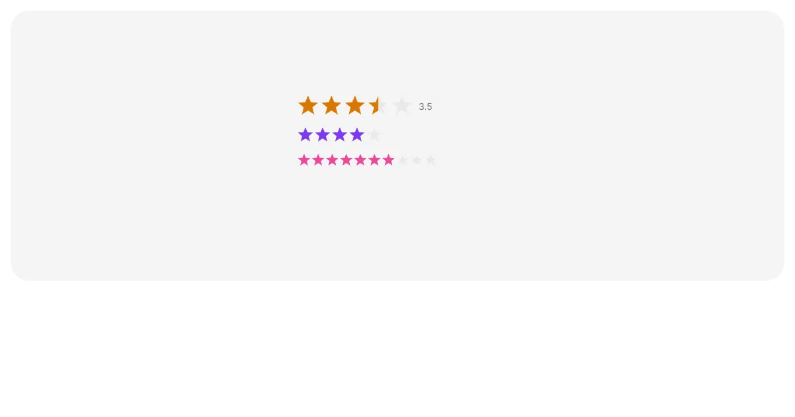

Rating
Star ratings with hover preview, half stars, springy hover and read-only display.

Usage
Add glowkit next to eframe:
cargo add glowkit eframeThen draw it inside any egui Ui:
use glowkit::prelude::*;
use glowkit::components::Rating;
ui.add(Rating::new(&mut stars).half(true).show_value(true));
ui.add(Rating::new(&mut score).max(10).size(18.0).color(hex("#EC4899")));Prefer to own the code? The glowkit CLI copies this component's source into your project, shadcn-style:
cargo install glowkit-cli
glowkit add ratingEquivalent to
If you know this pattern from Origin UI, Kibo UI and Uiverse, Rating is the Rust version: an original egui implementation, not a port, that runs natively and in WebAssembly.
- RatingOrigin UI
- RatingKibo UI
- Star ratingUiverse
About Rating
Rating is one of 13 components in glowkit's Inputs & Forms category. It lives in the glowkit-components crate, enabled by the components feature of glowkit (on by default). It reads its colors from the active glowkit theme, so it matches the rest of your app in light, dark or a custom brand theme, and every color, size and timing has a setter to override it.
Form controls with motion: one-time-code inputs with autofill, ratings, color pickers, calendars, file dropzones, vanishing inputs, day/night switches and availability schedulers.